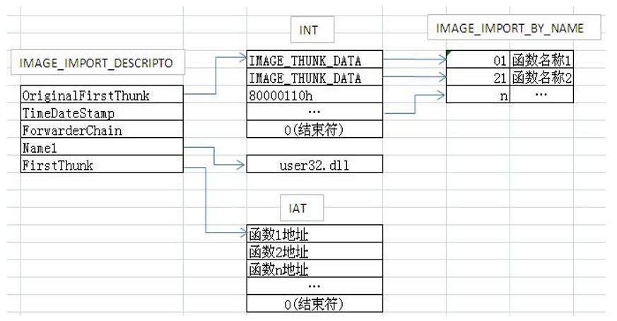

# 定位导入表流程
- 找到扩展 PE 头的最后一个成员 DataDirectory
- 获取 DataDirectory [1]
- 通过 DataDirectory [1].VirtualAddress 得到导入表的 RVA
- 将导出表的 RVA 转换为 FOA，在文件中定位到导入表
# 导入表的个数
与导出表不同，导入表通常要包含多个模块，而不像导出表只需要提供本 PE 文件需要提供的导出函数即可
因此，导出表只有一个，但导入表则可能有多个
当程序 运行时 ，需要依赖几个模块，就对应有几张导入表。
# 导入表的结构
typedef struct _IMAGE_IMPORT_DESCRIPTOR { | |
union { | |
DWORD Characteristics; | |
DWORD OriginalFirstThunk; //RVA 指向 IMAGE_THUNK_DATA 结构数组 | |
}; | |
DWORD TimeDateStamp; // 时间戳 | |
DWORD ForwarderChain; | |
DWORD Name; //RVA, 指向 dll 名字，该名字已 0 结尾 | |
DWORD FirstThunk; //RVA, 指向 IMAGE_THUNK_DATA 结构数组 | |
} IMAGE_IMPORT_DESCRIPTOR; | |
typedef IMAGE_IMPORT_DESCRIPTOR UNALIGNED *PIMAGE_IMPORT_DESCRIPTOR; |
Characteristics ：如果这个表是数组的最后一个则为 0，否则 OriginalFirstThunk 保存一个入口点地址，指向一个 IMAGE_THUNK_DATA 数组。
# 结构体分析
| 成员 | 数据宽度 | 说明 |
|---|---|---|
| Characteristics | DWORD (4 字节) | 标志 为 0 表示结束 没有导入描述符了 |
| OriginalFirstThunk | DWORD (4 字节) | RVA 指向 IMAGE_THUNK_DATA 结构数组 (桥 1) |
| TimeDateStamp | DWORD (4 字节) | 时间戳 |
| ForwarderChain | DWORD (4 字节) | 链表的前一个结构 |
| Name | DWORD (4 字节) | RVA，指向 DLL 名字，该名字以 ''\0'' 结尾 |
| FirstThunk | DWORD (4 字节) | RVA 指向 IMAGE_THUNK_DATA 结构数组 (桥 2) |
# Characteristics
标志 为 0 表示结束 没有导入描述符了
# OriginalFirstThunk
# IMAGE_THUNK_DATA 结构
在介绍 OriginalFirstThunk 之前，要先了解一下 OriginalFirstThunk 和 FirstThunk 所指向的结构数组
#ifdef _WIN64 | |
… | |
typedef IMAGE_THUNK_DATA64 IMAGE_THUNK_DATA; | |
typedef PIMAGE_THUNK_DATA64 PIMAGE_THUNK_DATA; | |
… | |
#else | |
… | |
typedef IMAGE_THUNK_DATA32 IMAGE_THUNK_DATA; | |
typedef PIMAGE_THUNK_DATA32 PIMAGE_THUNK_DATA; | |
… | |
#endif | |
typedef struct _IMAGE_THUNK_DATA64 { | |
union { | |
ULONGLONG ForwarderString; // PBYTE | |
ULONGLONG Function; // PDWORD | |
ULONGLONG Ordinal; | |
ULONGLONG AddressOfData; // PIMAGE_IMPORT_BY_NAME | |
} u1; | |
} IMAGE_THUNK_DATA64; | |
typedef IMAGE_THUNK_DATA64 * PIMAGE_THUNK_DATA64; | |
typedef struct _IMAGE_THUNK_DATA32 { | |
union { | |
DWORD ForwarderString; // PBYTE | |
DWORD Function; // PDWORD | |
DWORD Ordinal; | |
DWORD AddressOfData; // PIMAGE_IMPORT_BY_NAME | |
} u1; | |
} IMAGE_THUNK_DATA32; | |
typedef IMAGE_THUNK_DATA32 * PIMAGE_THUNK_DATA32; |
IMAGE_THUNK_DATA 是一个 4 字节的数据，如果最高位是 1，那么低 31 位就是函数的导出序号；
如果最高位是 0，那么它的值是一个 RVA，指向一个 IMAGE_IMPORT_BY_NAME 结构。
指向的数组中每一项为一个结构，此结构名称是 IMAGE_THUNK_DATA
数组最后以一个内容全为 0 的 IMAGE_THUNK_DATA 作为结束
IMAGE_THUNK_DATA 实际上只是一个 DWORD ，但在不同的时刻却拥有不同的解释
IMAGE_THUNK_DATA 有两种解释：
- DWORD 最高位为 0，那么该数值是一个 RVA，指向_IMAGE_IMPORT_BY_NAME 结构，表明函数是以字符串类型的函数名导入的
- DWORD 最高位为 1，那么该数值的低 31 位就是函数的导出函数的序号
_IMAGE_IMPORT_BY_NAME 结构：
typedef struct _IMAGE_IMPORT_BY_NAME { | |
WORD Hint; | |
BYTE Name[1]; | |
} IMAGE_IMPORT_BY_NAME, *PIMAGE_IMPORT_BY_NAME; |
其中低地址的 Hint 是导出序号，然而这个值可能并不准确，有些编译器会把它设置成 0，我们只需要关注 Name ，这个是一个以长度不定，以 \0 结尾字符串，表示函数名。
这里不难发现，IMAGE_THUNK_DATA 最终提供的数据也只有 2 个：
- DWORD 最高位为 0 时：需要导入函数的名称（Hint 不一定准确，所以不使用）
- DWORD 最高位为 1 时：需要导入的函数在导出表中的序号
正好对应了在导出表中获得导出函数所需的两种方法：
- 根据函数名称获取导出函数地址
- 根据函数序号获取导出函数地址
# OriginalFirstThunk
因为它是指向另外数据结构的通路，因此简称为桥 1。该字段指向一个包含了一系列结构的数组：IMAGE_THUNK_DATA
桥 1 所指向的地址列表被定义为： INT （Import Name Table） 导入名称表
# TimeDateStamp
时间戳，一般不用，大多情况下都为 0。如果该导入表项被绑定，那么绑定后的这个时间戳就被设置为对应 DLL 文件的时间戳。操作系统在加载时，可以通过这个时间戳来判断绑定的信息是否过时
# ForwarderChain
链表的前一个结构
# Name
这里的 Name 是一个 RVA，它指向该结构对应的 DLL 文件的名称，而这个名称是以 "\0" 结尾的 ANSI 字符串
ANSI 编码是一种对 ASCII 码的拓展
# FirstThunk
与 OriginalFirstThunk 相同，它指向的链表定义了针对 Name 这个动态链接库引入的所有导入函数，简称桥 2
桥 2 所指向的地址列表被定义为： IAT （Import Adress Table） 导入地址表
# 导入表的双桥结构
桥 1 和桥 2 最终的目的地是一致的，都指向了引入函数的 "编号 — 名称"（Hint/Name）描述部分
桥 1 到目的地的过程中，经过了：INT（Import Name Table）导入名称表
而桥 2 到目的地的过程中，经过了：IAT (Import Address Table) 导入地址表
# PE 文件加载前后对比
PE 文件加载前

PE 文件加载后
滴水课件中的图解
PE 文件加载前
PE 文件加载后

结论：
- 在 PE 文件加载前：桥 1 指向的 INT 和桥 2 指向的 IAT 的数据值是相同的，但是其存储位置是不同的
- 在 PE 文件加载后：桥 1 指向的 INT 不变 ，但桥 2 指向的 IAT 的数据值变为了函数相应的 RVA 地址
PS：函数相应的 RVA 地址是根据原本 IAT 中的函数名称去一一寻找其他模块的导出表获取的。
英语单词：Thunk 英 /θʌŋk/ [计算机科学技术] 形实转换程序、形实替换程序、形实转换程序、替换程式
# IAT 表
PE 文件运行之前在文件中的时候，IAT 表和 INT 表一样，里面存储的要么是函数名，要么是导出序号。加载的时候操作系统会把 IAT 表里的值修改成函数真正在 DLL 中的地址，具体步骤是：操作系统首先将 exe 和所有 dll 加载到 4GB 虚拟内存中，然后遍历导入表，根据 DLL 名字调用 LoadLibrary 获取模块句柄 HMODULE，然后调用 GetProcAddress 获取函数地址，然后将函数地址写入到 IAT 表里。
# 代码解析导入表
void PrintImportTable(char* pBuffer) | |
{ | |
PIMAGE_DOS_HEADER pDosHeader = NULL;//DOS 头 指针 | |
PIMAGE_NT_HEADERS32 pNtHeader = NULL;//NT 头 指针 | |
PIMAGE_FILE_HEADER pFileHeader = NULL;// 文件头 指针 | |
PIMAGE_OPTIONAL_HEADER pOptionHeader = NULL;// 可选头 指针 | |
PIMAGE_DATA_DIRECTORY pDirectory = NULL;// 数据目录 指针 | |
PIMAGE_IMPORT_DESCRIPTOR pImportDesctory = NULL;// 导出表 指针 | |
size_t MoudleNum = NULL; // 导入表中的模块数目 | |
PIMAGE_THUNK_DATA pImageThunkFoa = NULL, | |
pImageThunkRva = NULL, | |
pIAT = NULL;// 指向 IMAGE_THUNK_DATA | |
PIMAGE_IMPORT_BY_NAME pIBN = NULL;// 按名字导出 | |
// 定位导入表的位置 | |
pDosHeader = (PIMAGE_DOS_HEADER)pBuffer; | |
pNtHeader = (PIMAGE_NT_HEADERS)(pDosHeader->e_lfanew + pBuffer); | |
pFileHeader = (PIMAGE_FILE_HEADER)((DWORD)pNtHeader + 4); | |
pOptionHeader = (PIMAGE_OPTIONAL_HEADER)((DWORD)pFileHeader + (DWORD)IMAGE_SIZEOF_FILE_HEADER); | |
pDirectory = (PIMAGE_DATA_DIRECTORY)pOptionHeader->DataDirectory; | |
pImportDesctory = (PIMAGE_IMPORT_DESCRIPTOR)((RvaToFoa(pDirectory[IMAGE_DIRECTORY_ENTRY_IMPORT].VirtualAddress, pBuffer) + (DWORD)pBuffer)); | |
// 计算导出模块数目。减一是不算上最后一个全为 0 的导入表 | |
MoudleNum = (pDirectory[IMAGE_DIRECTORY_ENTRY_IMPORT].Size / sizeof(IMAGE_IMPORT_DESCRIPTOR)) - 1; | |
printf("导入模块数目：%d\r\n", MoudleNum); | |
// 解析导出表 --INT 表 | |
for (size_t i = 0; i < MoudleNum; i++) | |
{ | |
//printf ("查看标志 (Characteristics) 是否有值：%#010X\r\n",(pImportDesctory + i)->Characteristics); | |
printf("\r\n\n<<----------模块名字(Name)：%s\---------->>\r\n", RvaToFoa((pImportDesctory + i)->Name, pBuffer) + (DWORD)pBuffer); | |
pImageThunkRva = (PIMAGE_THUNK_DATA)(pImportDesctory + i)->OriginalFirstThunk; | |
printf("(OriginalFirstThunk)(RVA)的值:%#010X\r\n", pImageThunkRva); | |
printf("时间戳(TimeDateStamp):%#010X\r\n", (pImportDesctory + i)->TimeDateStamp); | |
printf("上一个链表(ForwarderChain):%#010X\r\n", (pImportDesctory + i)->ForwarderChain); | |
printf("(FirstThunk)(RVA):%#010X\r\n\n\n", (pImportDesctory + i)->FirstThunk); | |
pImageThunkFoa = (PIMAGE_THUNK_DATA)(RvaToFoa((pImportDesctory + i)->OriginalFirstThunk, pBuffer) + (DWORD)pBuffer); | |
printf("<<----------解析导入模块[%s]中的INT表---------->>\r\n", RvaToFoa((pImportDesctory + i)->Name, pBuffer) + (DWORD)pBuffer); | |
while (*((PDWORD)pImageThunkFoa) != 0) | |
{ | |
// IMAGE_THUNK_DATA32 是一个 4 字节数据 | |
// 如果最高位是 1，那么除去最高位就是导出序号 | |
// 如果最高位是 0，那么这个值是 RVA 指向 IMAGE_IMPORT_BY_NAME | |
if ((*((PDWORD)pImageThunkFoa) & 0x80000000) == 0x80000000) | |
{ | |
printf("<<-按序号导入->> Ordinal:[%#06X]\n", (*((PDWORD)pImageThunkFoa) & 0x7FFFFFFF)); | |
} | |
else | |
{ | |
pIBN = (PIMAGE_IMPORT_BY_NAME)(RvaToFoa(*(PDWORD)pImageThunkFoa, pBuffer) + (DWORD)pBuffer); | |
printf("<<-按名字导入->>Hint:[%#06X] Name:[%s]\n", pIBN->Hint, pIBN->Name); | |
} | |
pImageThunkFoa++; | |
} | |
pIAT = (PIMAGE_THUNK_DATA)(RvaToFoa((pImportDesctory + i)->FirstThunk, pBuffer) + (DWORD)pBuffer); | |
printf("<<----------解析导入模块[%s]中的IAT表---------->>\r\n", RvaToFoa((pImportDesctory + i)->Name, pBuffer) + (DWORD)pBuffer); | |
while (*((PDWORD)pIAT) != 0) | |
{ | |
// IMAGE_THUNK_DATA32 是一个 4 字节数据 | |
// 如果最高位是 1，那么除去最高位就是导出序号 | |
// 如果最高位是 0，那么这个值是 RVA 指向 IMAGE_IMPORT_BY_NAME | |
if ((*((PDWORD)pIAT) & 0x80000000) == 0x80000000) | |
{ | |
printf("<<-按序号导入->> Ordinal:[%#06X]\n", (*((PDWORD)pIAT) & 0x7FFFFFFF)); | |
} | |
else | |
{ | |
pIBN = (PIMAGE_IMPORT_BY_NAME)(RvaToFoa(*(PDWORD)pIAT, pBuffer) + (DWORD)pBuffer); | |
printf("<<-按名字导入->>Hint:[%#06X] Name:[%s]\n", pIBN->Hint, pIBN->Name); | |
} | |
pIAT++; | |
} | |
} | |
} |
此函数仅解析了 INT 表，IAT 表暂时没有解析，不过都一样的，改一下就好了。
# Reference
https://www.52pojie.cn/thread-1413220-1-1.html
https://blog.csdn.net/Kwansy/article/details/106269757